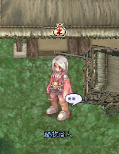
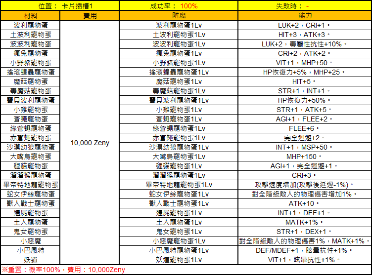

Pet-Enchant (寵物附魔)
Über den Pet Merchant in fünf Hauptstädten kannst du dein Feeding Ring mit dauerhaften Bonus-Abilities enchanten — ein günstiger aber wichtiger Stat-Boost für Pet-aktive Chars.
📍 NPC & Standorte
Pet Merchant (寵物商人)
Zweck: Enchantet den Feeding Ring mit einer Ability aus dem offiziellen Pool.
Positionen (in 5 Hauptstädten verfügbar):
prontera 218 211izlude_in 72 98morocc 203 87geffen 193 152payon 177 131

📋 NPC-Information — Deutsch aufklappen
Ein Screenshot eines Pet Merchant NPCs in Ragnarok Zero.
- Pet Merchant
Der NPC trägt den Titel 'Pet Merchant' (寵物商人).
💍 Enchant-Ziel
Das Enchanting zielt ausschließlich auf das Item Feeding Ring (飼養戒指) — du musst also zuerst einen Feeding Ring besitzen (über Pet Taming oder Pet-Quests erhältlich), bevor du beim Pet Merchant enchanten lassen kannst.
📋 Ability-Pool
Die offiziellen Ability-Listen:

📋 Übersicht der Karten-Slot-Verzauberungen — Deutsch aufklappen
Diese Tabelle zeigt die Kosten, die verfügbaren Verzauberungsoptionen und die resultierenden Statusboni für Karten-Slot 1.
| Material | Kosten | Verzauberung | Fähigkeit |
|---|---|---|---|
| Poring Egg | 10,000 Zeny | Poring Egg Lv1 | LUK+2, CRIT+1 |
| Drops Egg | 10,000 Zeny | Drops Egg Lv1 | HIT+3, ATK+3 |
| Poporing Egg | 10,000 Zeny | Poporing Egg Lv1 | LUK+2, Poison Resistance+10% |
| Lunatic Egg | 10,000 Zeny | Lunatic Egg Lv1 | CRIT+2, ATK+2 |
| Orc Baby Egg | 10,000 Zeny | Orc Baby Egg Lv1 | VIT+1, MHP+50 |
| Rockers Egg | 10,000 Zeny | Rockers Egg Lv1 | HP Recovery+5%, MHP+25 |
| Spore Egg | 10,000 Zeny | Spore Egg Lv1 | HIT+5 |
| Poison Spore Egg | 10,000 Zeny | Poison Spore Egg Lv1 | STR+1, INT+1 |
| Baby Poring Egg | 10,000 Zeny | Baby Poring Egg Lv1 | HP Recovery+50% |
| ChonChon Egg | 10,000 Zeny | ChonChon Egg Lv1 | STR+1, ATK+5 |
| Fly Egg | 10,000 Zeny | Fly Egg Lv1 | AGI+1, FLEE+2 |
| Green Fly Egg | 10,000 Zeny | Green Fly Egg Lv1 | FLEE+6 |
| Red Fly Egg | 10,000 Zeny | Red Fly Egg Lv1 | Perfect Dodge+2 |
| Desert Wolf Baby Egg | 10,000 Zeny | Desert Wolf Baby Egg Lv1 | INT+1, MSP+50 |
| Peco Peco Egg | 10,000 Zeny | Peco Peco Egg Lv1 | MHP+150 |
| Raccoon Baby Egg | 10,000 Zeny | Raccoon Baby Egg Lv1 | AGI+1, Perfect Dodge+1 |
| Picky Egg | 10,000 Zeny | Picky Egg Lv1 | CRIT+3 |
| Petite Egg | 10,000 Zeny | Petite Egg Lv1 | ASPD+1 (After-attack delay -1%) |
| Medusa Egg | 10,000 Zeny | Medusa Egg Lv1 | Physical Damage vs All Classes +1% |
| Orc Warrior Egg | 10,000 Zeny | Orc Warrior Egg Lv1 | ATK+10 |
| Zombie Egg | 10,000 Zeny | Zombie Egg Lv1 | INT+1, DEF+1 |
| Muka Egg | 10,000 Zeny | Muka Egg Lv1 | MATK+1% |
| Sohee Egg | 10,000 Zeny | Sohee Egg Lv1 | STR+1, DEX+1 |
| Baphomet Jr. Egg | 10,000 Zeny | Baphomet Jr. Egg Lv1 | Physical Damage vs All Classes +1%, MATK+1% |
| Little Baphomet Egg | 10,000 Zeny | Little Baphomet Egg Lv1 | DEF/MDEF+1, Stun Resistance+1% |
| Munak Egg | 10,000 Zeny | Munak Egg Lv1 | VIT+1, Stun Resistance+1% |
Erfolgsrate beträgt 100%. Die Option 'Zurücksetzen' kostet ebenfalls 10,000 Zeny mit 100% Erfolgsrate.

📋 Verzauberung-Upgrade: Haustier-Ei Lv1 — Deutsch aufklappen
Tabelle für das Upgrade von Haustier-Eiern auf Stufe 2 mit Erfolgsraten, Kosten und entsprechenden Bonuswerten.
| Material | Kosten | Verzauberung | Fähigkeit |
|---|---|---|---|
| Poring Egg | 10,000 Zeny | Poring Egg Lv2 | LUK+3, CRI+1 |
| Poporing Egg | 10,000 Zeny | Poporing Egg Lv2 | HIT+5, ATK+5 |
| Marin Egg | 10,000 Zeny | Marin Egg Lv2 | LUK+3, Poison Resistance+15% |
| Lunatic Egg | 10,000 Zeny | Lunatic Egg Lv2 | CRI+3, ATK+3 |
| Picky Egg | 10,000 Zeny | Picky Egg Lv2 | VIT+2, MHP+75 |
| ChonChon Egg | 10,000 Zeny | ChonChon Egg Lv2 | HP Recovery+8%, MHP+38 |
| Spore Egg | 10,000 Zeny | Spore Egg Lv2 | HIT+8 |
| Poison Spore Egg | 10,000 Zeny | Poison Spore Egg Lv2 | STR+2, INT+2 |
| Drops Egg | 10,000 Zeny | Drops Egg Lv2 | HP Recovery+75% |
| Chick Egg | 10,000 Zeny | Chick Egg Lv2 | STR+2, ATK+8 |
| Fly Egg | 10,000 Zeny | Fly Egg Lv2 | AGI+2, FLEE+3 |
| Metaling Egg | 10,000 Zeny | Metaling Egg Lv2 | FLEE+9 |
| Rockers Egg | 10,000 Zeny | Rockers Egg Lv2 | Perfect Dodge+2, HIT+1 |
| Desert Wolf Baby Egg | 10,000 Zeny | Desert Wolf Baby Egg Lv2 | INT+2, MSP+75 |
| Peco Peco Egg | 10,000 Zeny | Peco Peco Egg Lv2 | MHP+200 |
| Smokie Egg | 10,000 Zeny | Smokie Egg Lv2 | AGI+2, Perfect Dodge+1 |
| Coco Egg | 10,000 Zeny | Coco Egg Lv2 | CRI+5 |
| Petite Egg | 10,000 Zeny | Petite Egg Lv2 | ASPD+ (After Attack Delay -1%), AGI+1 |
| Isis Egg | 10,000 Zeny | Isis Egg Lv2 | Physical damage to all size enemies +2% |
| Orc Warrior Egg | 10,000 Zeny | Orc Warrior Egg Lv2 | ATK+15 |
| Zombie Egg | 10,000 Zeny | Zombie Egg Lv2 | INT+2, DEF+2 |
| Munak Egg | 10,000 Zeny | Munak Egg Lv2 | MATK+2% |
| Bongun Egg | 10,000 Zeny | Bongun Egg Lv2 | STR+2, DEX+2 |
| Deviruchi Egg | 10,000 Zeny | Deviruchi Egg Lv2 | Physical damage to all size enemies 1%, MATK+1%, MHP/MSP+1% |
| Baphomet Jr. Egg | 10,000 Zeny | Baphomet Jr. Egg Lv2 | DEF/MDEF+2, Stun Resistance+2% |
| Whisper Egg | 10,000 Zeny | Whisper Egg Lv2 | VIT+2, Stun Resistance+2% |
Erfolgsrate: 50%. Bei einem Fehlschlag gehen die Materialien verloren. Zurücksetzen: Erfolgsrate 100%, Kosten: 10,000 Zeny.
💡 Praxis-Tipps
- Re-Roll erlaubt: Wenn das Ergebnis nicht passt, einfach nochmal enchanten — Materialien vorrätig haben
- Extract-Option: Besonders starke Rolls lassen sich via Extract sichern und später umsetzen
- NPC ist überall: Die fünf Standorte sparen Reisezeit — einfach zum nächsten Hub
⚠️ Hinweise
- Gravity behält sich Änderungen an Inhalt und Mechanik vor.
- Mit zukünftigen Patches können die Ability-Pools angepasst werden — aktuelle Stände stets auf der Originalseite prüfen.